단순한 기록의 의미를 넘어, 그 순간의 공기와 찰나의 감각을 프레임 안에 온전히 연출합니다.
깊이 있는 시네마틱 필름 무드의 색감을 연구하며, 저만의 독창적인 시선이 담긴 사진을 만들어가고 있습니다.
Output
야외공간 스냅
2023.04 ~ 2024.04
시네마틱한 필름의 질감과 감각적인 구도를 담아,
오직 그 순간에만 존재하는 특별한 색감을 연출합니다.
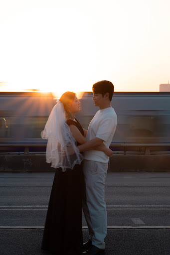
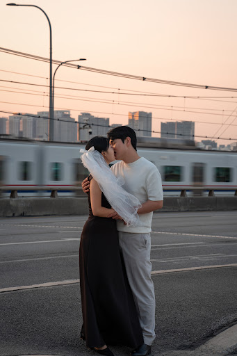
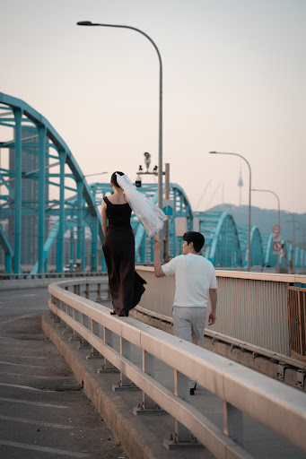
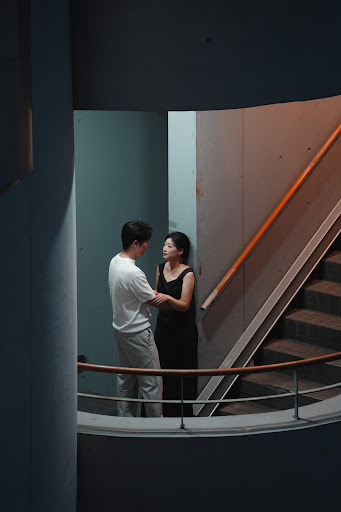
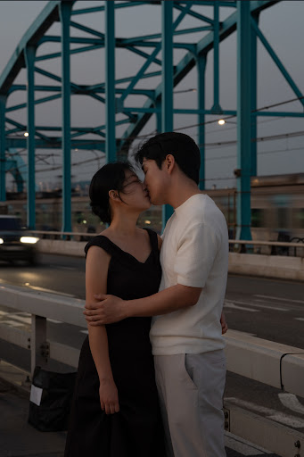
웨딩 스냅
2023.04 ~ 2024.04
인물 중심의 정교한 구도와 따뜻한 색감으로
일생의 가장 아름다운 순간을 온전히 담아냅니다.
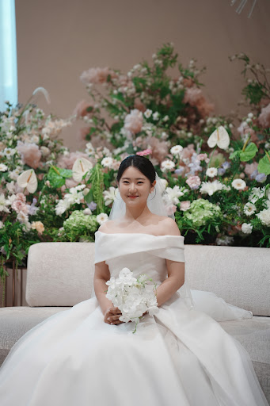
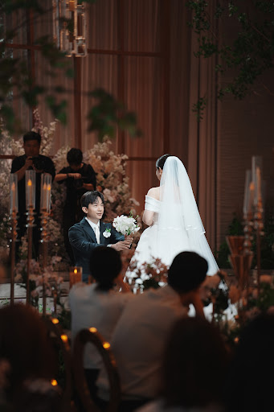
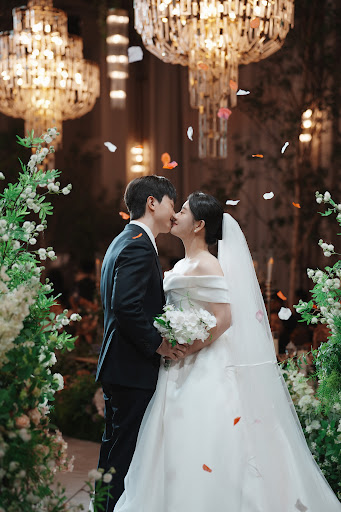
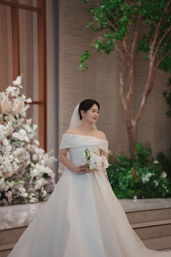
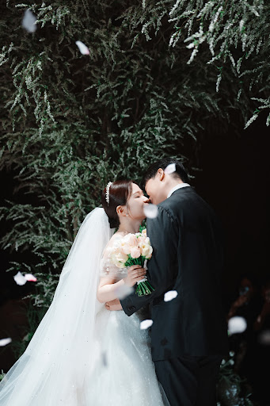
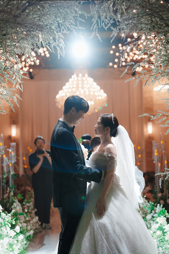
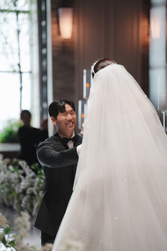
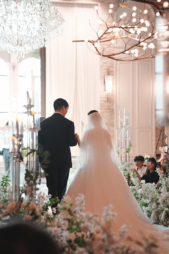